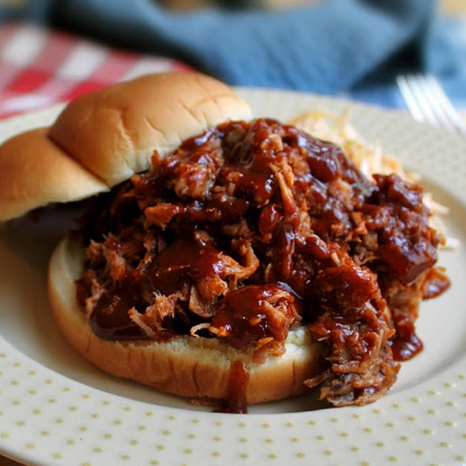

Pulled Pork BBQ

Use your favorite dry rub and barbeque sauce to make this succulent pork. A little trick I like is to put 2 ramekins with
liquid smoke flavoring in with the meat and roast it slowly. Do your patriotic American duty and serve this on the cheapest,
lightest white hamburger buns you can find.Use your favorite dry rub and barbeque sauce to make this succulent pork.
A little trick I like is to put 2 ramekins with liquid smoke flavoring in with the meat and roast it slowly.
Do your patriotic American duty and serve this on the cheapest, lightest white hamburger buns you can find.
Ingredients
- 3 tablespoons dry barbeque rub, or more as needed
- 1 (3 1/2) pound bone-in pork shoulder blade roast
- ½ teaspoon liquid smoke flavoring, divided
- 1 cup water, divided
- ¾ cup barbeque sauce, or as needed
- salt and freshly ground black pepper to taste
- 12 soft white hamburger buns
- ¾ cup barbeque sauce, divided
Steps
- Preheat oven to 210 degrees F (100 degrees C).
- Sprinkle dry rub generously on all sides of pork roast and place meat into a heavy pan or Dutch oven.
- Pour 1/4 teaspoon of liquid smoke flavoring into each of two 6-ounce ramekins; fill ramekins with 1/2 cup water each. Place
ramekins into the Dutch oven on either side of the roast. Place lid onto Dutch oven.
- Roast pork in the preheated oven until very tender, 12 hours. Remove roast from Dutch oven, place onto a work surface (such as a cutting board),
and separate the meat from the bone using your fingers. Discard any large pieces of fat.
- Roughly chop pork with a large knife or cleaver; drizzle with 3/4 cup barbeque sauce.
Season with salt and black pepper.
- Spread about 1 tablespoon barbeque sauce onto each bun and pile pork
on buns to serve.
Home